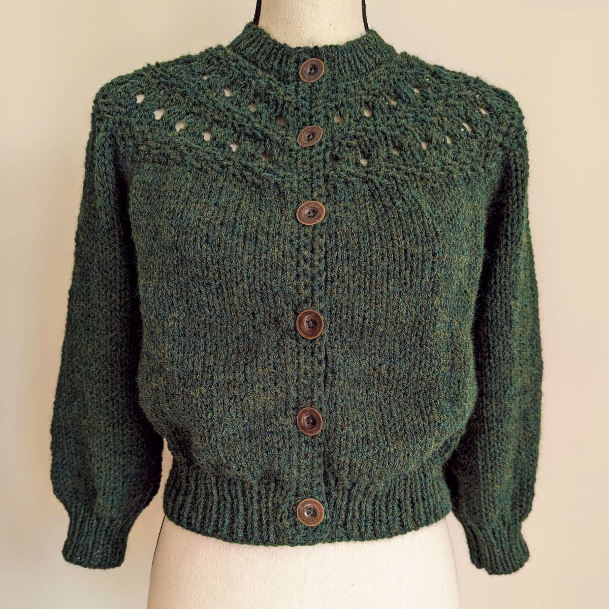
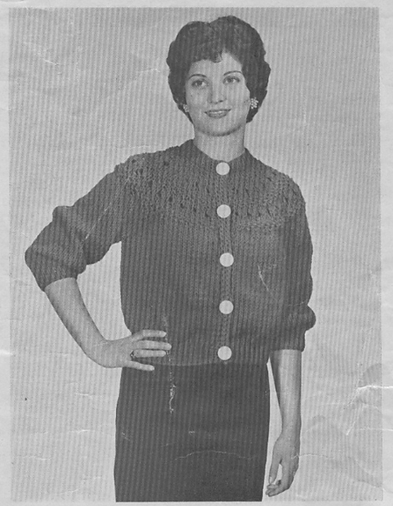
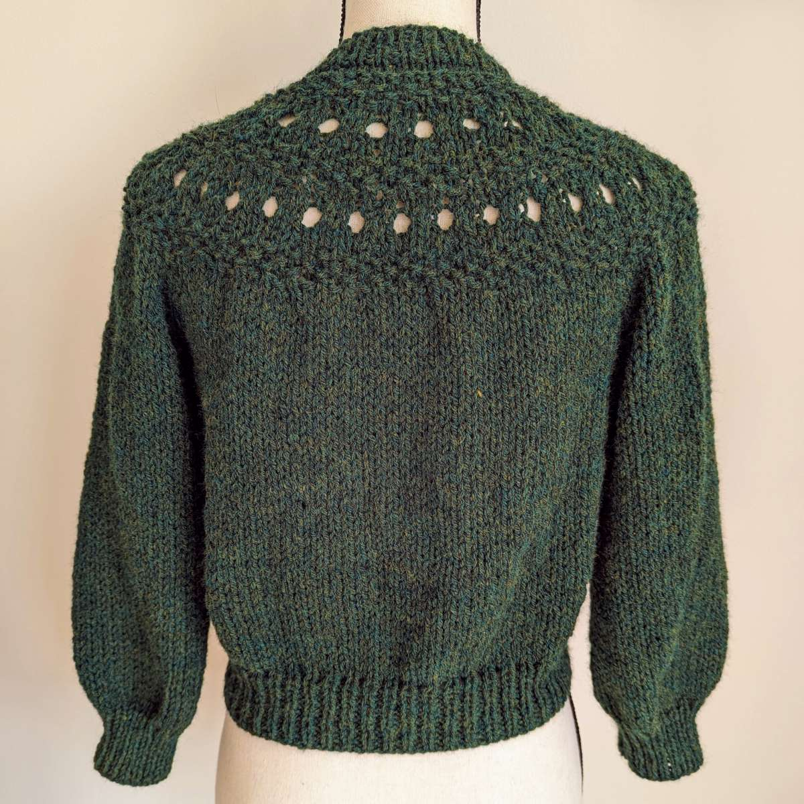

One-Piece Quickie Knit
“A Fashion Sweater in Medium Size”

Pattern source The Illinois Yarn Company
Date late 1950s-early 1960s

Materials
- Link to pattern (PDF)
- Worsted weight yarn, approximately 10 ounces (I used 9 ounces of Wool Ease)
- Knitting needles size 6 and 11
- Crochet hook size G-H
- Buttons: 5 (1 inch) or 6 (¾ inch)
Notes and modifications
- This is a loosely-knit, waist-length, ¾-sleeved cardigan, and the pattern is written in one “medium” size. Mine measured approx. 38” bust, 28” waist (unstretched), 17” long.
- Gauge was not given in the pattern. Mine is 13 stitches and 17 rows in 4” in stockinette.
- Yarn choice matters. I used a mostly-synthetic yarn (Wool Ease) and did not block, so I added 2” to the body length and 3” to the sleeve length. If you use wool and plan to block, I recommend swatching (and blocking your swatch) to see how much your knit will grow.
- Construction and shaping: This is worked in one piece from the top down, with a mostly circular yoke. Sleeves are worked from live stitches, knitted flat and seamed. (You could do them in the round, but I opted to follow the pattern.) There is no body shaping, and the only sleeve shaping is done at the cuff, so both body and sleeve can be worked to any length. Button band is single crochet.
- Speaking of that button band, instructions aren’t really included in the pattern. You want it to be a little on the short side; it should “pull in” the loose knitting and keep it from sagging longer in front. I used an H hook (I’m a tight crocheter) and winged it - mine ended up as 46 stitches picked up evenly.
- Buttonholes were simply [ch 1, skip 1 st, sc in next st] on row 3, then sc in the ch-1 space on row 4.
- I did not math out evenly-spaced buttonholes; I marked placement with safety pins and worked accordingly. They aren’t even and I don’t care. 😂
- Minor mods: I added length to both body and sleeves, as noted above. I also did the waist ribbing on larger needles (size 8) for a looser fit. I don’t have a tiny girdled 1950s waist, after all. 😂
